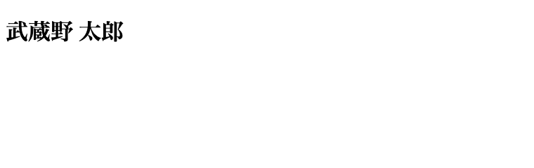
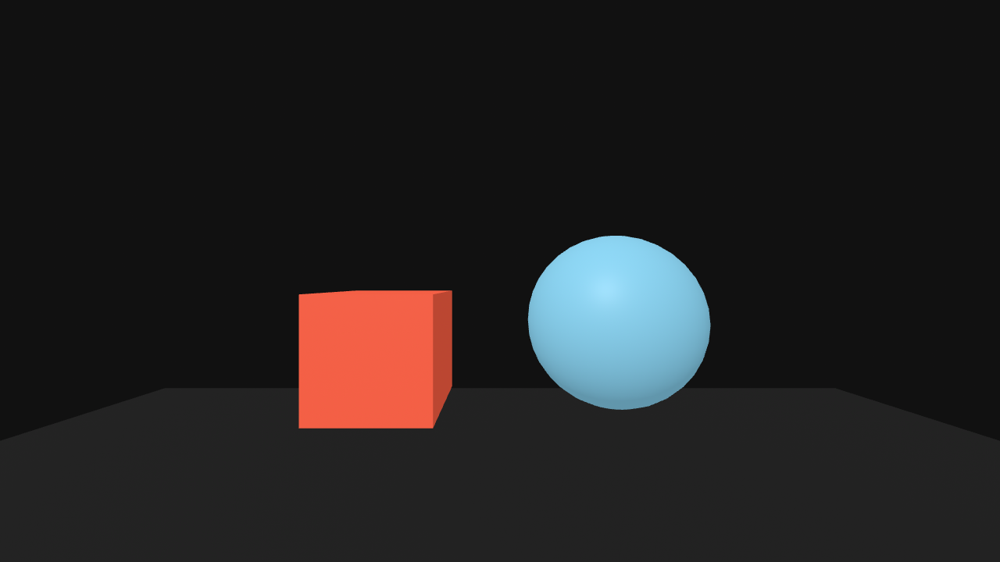
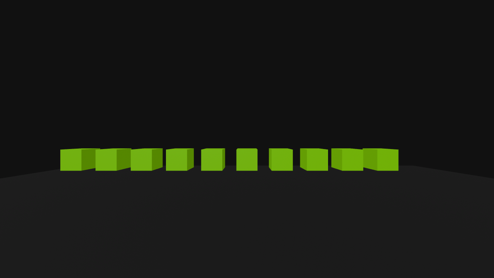
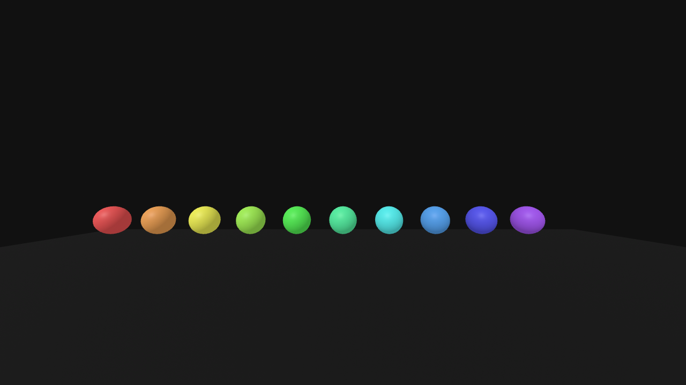
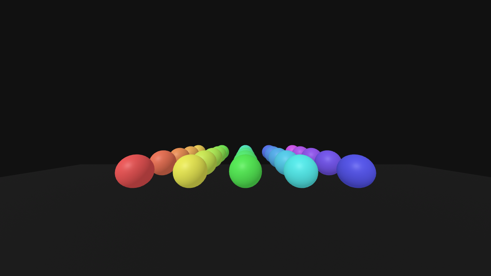

武蔵野大学データサイエンス学部
武蔵野大学国際データサイエンス学部（通信教育部）
中村 亮太
WebXRとは何かを理解し、HTMLの基礎を確認したうえで、A-Frameでボックスや球を表示する。さらにfor文を使って、たくさんのオブジェクトを一気に並べる方法を体験する。
テーマは 「バーチャル空間で、データサイエンスを実践する」。
3D空間を実験の舞台にすると、データで調べられる問いの例。10分野×10例。実際にVR/メタバースの現場でも、視線ヒートマップ・動線分析・行動ログ解析などが使われている（例：Tobii Pro VR Analytics による注視分析、不動産VR内見の視線データ、VR研修の行動解析）。
A. 小売・マーケティング（バーチャルショッピング）
B. スポーツ・身体運動
C. 教育・トレーニング
D. 医療・ヘルスケア・リハビリ
E. エンタメ・音楽ライブ・ゲーム
F. 建築・不動産・インテリア
G. 都市・観光・防災
H. 製造・産業・物流
I. コミュニケーション・働き方
J. 研究・実験・心理
流れは次の3ステップ。
① 統計的検定 ─ 「差は本物か、ただの偶然か」
② 主観評価の定量化 ─ 感覚を数値にする
空間づくりと並行し、分析の道具を演習で習得。到達像＝集める → 整える → 図にする → 数値で語る → 差を証明。
ノート: Notionに記録する項目（提出前に確認）
以下の項目を1つのNotionページに記録し、PDF化して提出します。テンプレートは配りません。構成は自分で考えること。
| セクション | 記録する内容 | リンク | |
|---|---|---|---|
| ノート グループ | グループ番号・メンバー名・自分の役割・チームのグランドルール | 移動 | |
| ノート MD1発表会 | 他チーム作品の良かった点・データ活用の工夫・自分の学び（3作品以上） | 移動 | |
| ノート WebXR/HTML/A-Frame | WebXR・タグ/属性・A-Frameの主要プリミティブの穴埋め | 移動 | |
| 標準課題 std1-1 / std1-2 / std1-3 | box+sphere／for文で10個並べる／二重forでグリッド ─ 各コードと実行スクショ | 移動 | |
| 発展課題 adv1-1 | for文でつくったアート作品のコードとスクショ＋工夫（任意） | 移動 |
※ 発展課題（adv1-1）は任意。ほかはすべて記録が必要です。
やり方
ポイント
回ごとに交代OK。まずは初回の担当を決定。
| 役割 | 主な仕事 |
|---|---|
| ファシリテーター | 議論の進行・全員の発言を促す |
| サブリーダー | リーダーのアシスト・代理 |
| プレゼンター | グループを代表して発表、質問に回答 |
| 記録（ノート） | Notionにグループの記録 |
| タイムキーパー | 時間配分・進捗の声かけ |
| 調べ役 | 不明点を資料・Webで確認 |
後期を通じて効くチームの「土台」を、最初に言葉にして残す。
| チーム/作品 | 良かった点 | データ活用の工夫 | 自分の学び | 自分がした質問 | 回答 |
|---|---|---|---|---|---|
※ 「自分がした質問」「回答」は、最低1つは必ず記入。
A-Frame）a-box）と球（a-sphere）を表示するHTMLは「サーバから受け取って、ブラウザが画面に描く」もの。流れを図で押さえる。
※ 今日の演習では index.html を自分のPCで開く（＝手元のファイルをブラウザが直接読む）。仕組みはサーバから受け取る場合と同じ。
「サーバ」と聞くと難しそうだが、コマンド1つで自分のPCをサーバにできる。
index.html のあるフォルダへ移動python3 -m http.server 8000http://localhost:8000 を開く → ページ表示Ctrl + C※ VS Codeの拡張「Live Server」でもOK。localhost＝自分のPC自身を指す住所。
世の中の公開Webサイトは、用途に応じて次のような手段で動いている。
| 手段 | 例 | 特徴 |
|---|---|---|
| 開発・学習用（手元） | python3 -m http.server ／ VS Code Live Server | すぐ起動。公開はしない |
| サーバソフト | Apache ／ Nginx | 定番。自分でサーバを運用 |
| プログラムで起動 | Node.js（Express）／ Python（Flask） | 動的なページ・APIに強い |
| 静的ホスティング | GitHub Pages ／ Netlify ／ Vercel ／ Amazon S3 | HTML/JSを置くだけで公開。無料枠あり |
| クラウド／レンタル | AWS ／ Google Cloud ／ さくら・エックスサーバー | 本格運用。規模を自由に拡大 |
※ どの手段でも、「ブラウザのリクエスト → サーバのレスポンス → 表示」という基本は同じ。
「サーバを立てる → ブラウザでアクセス → ページが表示される」までの流れを、上の表の用語を使いながら、自分の言葉で箇条書きにしてNotionに記録。
ヒント（使うとよい言葉）
localhost ／ URL を入力A-Frameは「HTMLのように書ける」。まずHTMLの基本ルールを確認。HTMLは タグで要素を作り、属性で性質を指定する言語。
HTML <a-box color="tomato" width="2"></a-box> <!-- ↑ a-box がタグ（要素の種類） --> <!-- color / width が属性（要素ごとの性質）--> <!-- "tomato" / "2" が属性の値 -->
<a-box> と 終了タグ </a-box> で挟むHTML <!DOCTYPE html> <html> <head> <title>はじめてのページ</title> </head> <body> <h1>こんにちは</h1> </body> </html>
<head>：ページの設定（タイトル・読み込むライブラリなど）<body>：画面に表示される中身。A-Frameの3D空間も <body> の中に書くフォルダを作り、HTMLファイルを置いて、ブラウザで表示するまでを実際にやる。<h1> の中身を自分の名前に変えて表示するのがゴール。
STEP 1：作業フォルダを作る
ターミナルを開き、次を1行ずつ実行。ホーム直下に Lecture / MD2 / No1 のフォルダを作る。
Bash # ホームディレクトリへ移動 cd ~ # Lecture/MD2/No1 をまとめて作成（-p で途中の階層も自動で作る） mkdir -p ~/Lecture/MD2/No1 # 作ったフォルダへ移動 cd ~/Lecture/MD2/No1
STEP 2：HTMLファイルを作る
VS Codeでフォルダを開き、index.html という名前で新規ファイルを作る。
Bash # いまのフォルダ（No1）を VS Code で開く code .
※ ファイル名は半角で index.html。拡張子 .html を必ずつける。
STEP 3：中身を書く（<h1> を自分の名前に）
HTML <!DOCTYPE html> <html> <head> <title>はじめてのページ</title> </head> <body> <h1>武蔵野 太郎</h1> <!-- ★自分の名前に変える★ --> </body> </html>
書いたら 保存（Mac：⌘ + S）。
STEP 4：ブラウザで表示する
index.html をダブルクリック（または右クリック →「ブラウザで開く」）open index.html
<h1> に書いた名前が見出しとして大きく表示される<（ ）> タグの中に書く。A-Frame＝HTMLのタグで3D/WebXR空間を作れるフレームワーク<a-scene>（3D空間自体）の中に <a-box> や <a-sphere> などプリミティブ（基本図形）を配置<head> に1行追加するだけ<a-scene> の中に書く3D空間に置くものは、すべて <a-scene> 〜 </a-scene> の間（中）に書く。外に書くと表示されない。
<a-scene>＝3D空間という「いれもの（箱）」</a-scene> の外に書いたオブジェクトは3D空間に出てこないHTML <!DOCTYPE html> <html> <head> <!-- A-Frame を読み込む（1行で必須） --> <script src="https://aframe.io/releases/1.6.0/aframe.min.js"></script> </head> <body> <a-scene> <!-- ボックス（箱） --> <a-box position="-1 1 -3" color="tomato"></a-box> <!-- スフィア（球） --> <a-sphere position="1 1.25 -3" radius="0.75" color="skyblue"></a-sphere> <!-- 地面と背景 --> <a-plane rotation="-90 0 0" width="10" height="10" color="#222"></a-plane> <a-sky color="#111"></a-sky> </a-scene> </body> </html>
index.html で保存 → ブラウザで開くだけ。ドラッグで視点回転。

a-box（tomato）と a-sphere（skyblue）が表示されるposition＝"x y z" の3数値で位置を指定。位置の数値こそ、第6回の「座標データ」。
| 軸 | 意味 | 大きくすると |
|---|---|---|
| x | 左右 | 右へ動く（マイナスで左） |
| y | 上下 | 上へ動く（マイナスで下） |
| z | 奥行き | 手前へ来る（マイナスで奥） |
z=0 付近 → オブジェクトは z をマイナス（奥）にcolor／球の大きさ＝radius／箱の大きさ＝width・height・depth<a-（ ）> である。a-（ ）、球は a-（ ）で表示する。position="x y z" のうち、奥行きを表すのは（ ）である。骨組みは箱（a-box）だけ。球（a-sphere）が抜けている。コメントの位置に球の1行を自分で書いて完成。完成例の書き方がヒント。
HTML <!DOCTYPE html> <html> <head> <script src="https://aframe.io/releases/1.6.0/aframe.min.js"></script> </head> <body> <a-scene> <a-box position="-1 1 -3" color="tomato"></a-box> <!-- ★球（a-sphere）を1行、自分で書く★ --> <a-plane rotation="-90 0 0" width="10" height="10" color="#222"></a-plane> <a-sky color="#111"></a-sky> </a-scene> </body> </html>
position・radius・color は自分で好きに決めるa-cylinder / a-cone など）も1つ足してみる箱と同じ「タグ＋属性」の形。例：
<a-sphere position="1 1.25 -3" radius="0.75" color="skyblue"></a-sphere>
数値・色は変更OK。まず「書いて表示できた」を体験。
<script> 〜 </script> の中にJavaScriptを書くconsole.log( ) ＝ 開発者ツールの「コンソール」に文字や数値を出す命令。プログラムの動作確認の基本。
HTML <script> console.log('こんにちは！'); // 文字を表示 console.log(1 + 2); // 計算結果 3 を表示 </script>
こんにちは！ と 3 が表示されればOK' '（クォート）で囲む。数値はクォートなしで書く文法を全部は覚えない。演習で実際に使う基礎だけを押さえる。
① 変数：値に名前をつけて入れておく箱
JavaScript const name = 'みな'; // const = あとで変えない let count = 0; // let = あとで変える
② 値の型：文字列 と 数値
JavaScript 'こんにちは' // 文字列 → クォート ' ' で囲む 42 // 数値 → クォートなし
③ 計算：＋ − ＊ ／
JavaScript count = count + 1; // count を 1 増やす
④ テンプレートリテラル：文字列に値を埋め込む（重要）
JavaScript const i = 3; `${i - 5} 1 -5` // → "-2 1 -5"（位置の文字列を作れる）
` ` で囲み、${ } の中に式を書くと計算結果が入るposition を作るときに使う（部品④の空欄）⑤ コメント：// から後ろはメモ（実行されない）
次に、同じタグを手で100個書くのは大変なので、JavaScriptのfor文 で「量産」する。for文は後の回の「たくさんの計測対象・データ点」の基礎。
JavaScript for (let i = 0; i < 10; i++) { // 中身が10回くりかえされる（i は 0,1,2,...,9） }
let i = 0：カウンタの初期値i < 10：条件が成り立つ間くりかえすi++：1回ごとに i を1増やす完成コードなし。部品①〜④を正しい場所・順番で組み立て。空欄（____）は自分で埋める。
部品① 土台のHTML（変更せず使ってOK）
HTML <!DOCTYPE html> <html> <head> <script src="https://aframe.io/releases/1.6.0/aframe.min.js"></script> </head> <body> <a-scene> <a-sky color="#111"></a-sky> <a-plane rotation="-90 0 0" width="20" height="20" color="#1a1a1a"></a-plane> <!-- 生成した箱を入れる場所 --> <a-entity id="group"></a-entity> </a-scene> <script> // ★部品②③④ を組み立てて書く★ </script> </body> </html>
部品② コンテナを取得する（1行）
JavaScript const group = document.querySelector('#group');
部品③ くりかえしの「わく」（中身はまだ空）
JavaScript for (let i = 0; i < 10; i++) { // ★部品④を入れる★ }
部品④ 箱を1つ作って空間に追加（③の中括弧の中に入れる）
JavaScript const box = document.createElement('a-box'); box.setAttribute('position', `____ 1 -5`); // 空欄: i を使って横にずらす式 box.setAttribute('color', '#76B900'); box.setAttribute('width', '0.6'); box.setAttribute('height', '0.6'); box.setAttribute('depth', '0.6'); group.appendChild(box);
index.html という名前で保存する<script> の中に、② → ③ の順で書くfor の 中括弧 { } の中 に ④ を入れる____ に、i を使って横にずらす式を入れる<script> の中身を見るJavaScript const group = document.querySelector('#group'); for (let i = 0; i < 10; i++) { const box = document.createElement('a-box'); box.setAttribute('position', `${i - 5} 1 -5`); box.setAttribute('color', '#76B900'); box.setAttribute('width', '0.6'); box.setAttribute('height', '0.6'); box.setAttribute('depth', '0.6'); group.appendChild(box); }
空欄＝${i - 5}。i が 0→9 → x が −5→4 → 10個が横並び。

a-box が横に10個並ぶi < 10 の 10 を 30 に変えると、いくつ並ぶ？position の式を `${i - 5} ${i * 0.5} -5` にすると、どんな形になる？`hsl(${i * 30}, 70%, 60%)` にすると、1個ずつ色が変わる'a-box'→'a-sphere'、width/height/depth→radius で球を量産
radius=0.3）＋ hsl() で1個ずつ色を変えた結果部品A 二重forのわく（x＝横、z＝奥行き）
JavaScript for (let x = 0; x < 5; x++) { for (let z = 0; z < 5; z++) { // ★球を1つ作る（部品B）★ } }
部品B 球を作る（position の空欄を埋める）
JavaScript const s = document.createElement('a-sphere'); s.setAttribute('position', `${x - 2} 1 ____`); // 空欄: z を使って奥にずらす式 s.setAttribute('radius', '0.3'); s.setAttribute('color', `hsl(${(x * 5 + z) * 12}, 70%, 60%)`); // 1個ずつ色が変わる group.appendChild(s);
`${x - 2} 1 ____` ＝ 変数を組み合わせて position を作るposition は 「x y z」＝半角スペース区切りの3つの数値。バッククォート ` ` で全体を1つの文字列にし、${ } の中だけが計算されて数値に化ける。
${ } の中は計算される。x が変わると数値も変わる（横の位置）${ } の外は書いた通りの文字。前後の半角スペースが「x y z」の区切りz を使った式を入れると、奥行きの数値になる（＝今回の空欄）代入の例（空欄に z の式を入れた後のイメージ）
| x | z | ${x - 2} | できる文字列 |
|---|---|---|---|
| 0 | 0 | -2 | "-2 1 （zの値）" |
| 1 | 2 | -1 | "-1 1 （zの値）" |
| 3 | 4 | 1 | "1 1 （zの値）" |
※ x と z の2つの変数を組み合わせるので、二重forの全マスに1個ずつ球が置ける。
<script> をベースに、for文を部品Aの二重に置きかえる____ に、z を使って奥（マイナス方向）にずらす式を入れる<script> の中身を見るJavaScript const group = document.querySelector('#group'); for (let x = 0; x < 5; x++) { for (let z = 0; z < 5; z++) { const s = document.createElement('a-sphere'); s.setAttribute('position', `${x - 2} 1 ${-z - 3}`); s.setAttribute('radius', '0.3'); s.setAttribute('color', `hsl(${(x * 5 + z) * 12}, 70%, 60%)`); group.appendChild(s); } }
空欄＝${-z - 3}。z が 0→4 → 奥行き −3→−7 → 5×5＝25個が格子状。

a-sphere が hsl() で色違いに並ぶここまでの技を全部使って、for文でたくさんのオブジェクトを配置し、自分だけのアート作品をつくる。正解はなし。見て楽しい・面白いを目指す。
使える技（組み合わせ自由）
a-box / a-sphere / a-cylinder / a-cone / a-torus などposition の式：i や x,z を計算して、らせん・波・円・タワーなどの形にhsl() や i で1個ずつ変化させてグラデーションradius や scale を i で変えて、だんだん大きく／小さくアイデアの例
y を i で上げ、x,z を Math.sin/Math.cos で回す）radius を場所で変える）hsl() で色を回す）Math.sin(i)・Math.cos(i) を使うと曲線・円が作れる